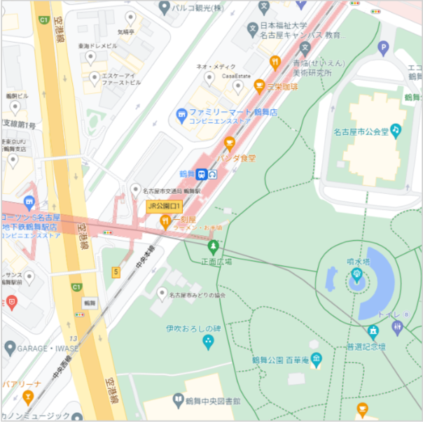

<ion-header>
    <ion-toolbar>
        <ion-title>
            <div class="text-center">
                <h1 class="text-3xl">KASAnaru</h1>
            </div>
        </ion-title>
    </ion-toolbar>
</ion-header>

<ion-content>
    <div class="w-full p-4">
        <a routerLink="../">
            <div class="m-2 text-2xl">
                <ion-icon name="arrow-back-outline" class="p-2"></ion-icon>
                <span class="text-base p-2 font-bold">戻る</span>
            </div>
        </a>
        <h1 class="mt-4 mb-4 text-3xl font-bold">目的地を選択</h1>
        
        <h2 class="mt-4 mb-2 text-2xl font-bold">選んだ場所</h2>
        <h2 class="mt-2 mb-4 text-2xl font-bold">鶴舞駅</h2>
        <button type="submit" class="btn btn-primary w-full mt-4" routerLink="./check">決定</button>
    </div>
</ion-content>